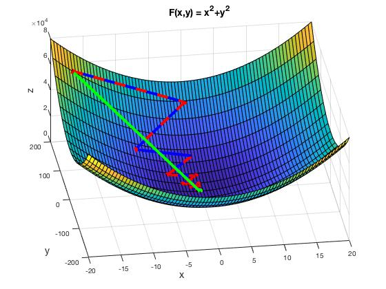

My education in Mathematics included courses in non-linear optimization and numerical analysis. In these classes I implimented many different ODE/PDE solvers and optimization techniques. The following illustrates some of these algorithms. Access this code here.
Standard 2nd and 4th order methods for solving Initial Value ODEs
The first method we developed for solving Initial Value Problems (IVPs) was Euler's method. This method is built off the assumption of local linearity; i.e Taylor Series. By expanding the Taylor Series of some function \( y(t)\) we obtain an approximation of the ODE with error \( \mathcal{O}(h^2) \).
Since \( y' = f(t,y(t)) \), let \( h = t_{k+1} - t_{k} \), then by Taylor Series we obtain $$ y(t_{k+1}) = y(t_{k}) + f(t_{k},y(t_{k})) h + \mathcal{O}(h^2) $$ Thus, by dropping the \( \mathcal{O}(h^2)\) error term, we have an update rule for the iterations of \(y(t)\) and can ensure an error of at most the square of our partition size, \(h\).
Since Euler's method immediately fell from the 2nd order Taylor's Series, we can simply use a higher order expansion to get lower order error. Let \( h = t_{k+1} - t_{k} \) and \(f(t,y(t)) = y'(t)\), then recall that by Taylor's Remainder theorem we obtain $$ y(t_{k+1}) = y(t_k) + h f(t_k,y(t_k)) + \frac{h^2}{2!}f'(t_k,y(t_k)) + \mathcal{O}(h^3) $$ Here we see that the error is now 3rd order, but we must be able to compute the 2nd derivative of \(y(t)\) or the first derivative of \(f(t,y(t))\).
Since the higher order Euler's method has error proportional to \(\mathcal{O}(h^3)\), versus the \(\mathcal{O}(h^2)\) of the original Euler's method, we expect a much closer approximation of the solution to an IVP. Below we see a comparison of an IVP of the form $$ y'(t) =f(t,y(t))= \frac{2}{t}y(t) + t^2 e^t \quad y(t$$ which has the exact solution $$ y(t) = t^2 \left( e^t - e^1\right) $$ The plot below compares this exact solution to the approximations obtained from both Euler's method and the higher order Euler's method (as shown in the code to the right).
Heun's, Midpoint, and Runge-Kutta methods for solving IVPs
When using Euler's method, we are looking at the discrete timesteps a distance \(h\) apart. Heun's method offers a solution that uses Euler's method to approximate \(y(t_k)\), but then adjusts this value with the previous timestep's approximation. Thus we obtain an update rule given by $$ \widetilde{y}(t_{k+1}) = y(t_k) + hf(t_k,y(t_k)) $$ $$ y(t_{k+1}) = y(t_k) + \frac{h}{2}\left[f(t_k,y(t_k))+ f(t_{k+1},\widetilde{y}(t_{k+1}) )\right] $$
Intuitively, this smooths the approximation by adding a dependence to the previous timestep. The error associated with Heun's method can be found by integrating \(f(t,y(t))\). Using the Trapezoid rule we obtain $$ y(t) = \int_a^t f(s,y(s)) ds = y(a) + \frac{h}{2}\left[ f(a,y(a)) + f(t,y(t)) \right] + \mathcal{O}(h^2) $$ Which gives us an error of \(\mathcal{O}(h^2)\)
Like Heun's rule, the midpoint method attempts to improve upon Euler's method without the need of higher order derivatives. The midpoint method does this by trying use multiple timesteps simultaneously. The update rule is given by $$ y(t_{k}) = y(t_{k-1}) + \frac{h}{2}f(t_{k-1},y(t_{k-1})) $$ $$ y(t_{k+1}) = y(t_k) + hf(t_k,y(t_k)) $$ The error can be found by Taylor expanding both \(y(t_k)\) and \(y(t_{k+1})\). Then, we plug our approximation of \(y(t_k)\) into the series for \(y(t_{k+1})\) and we obtaint $$ y(t_{k+1}) = y(t_k) + h f(t_k,[y(t_{k-1})+hy'(t_{k-1})+\mathcal{O}(h^2)]) + \mathcal{O}(h^2)$$ Then, since we have an error term \(\mathcal{O}(h^2)\) multiplied by \(h\), we obtain an error of \(\mathcal{O}(h^3)\).
The Runge-Kutta method is the result of using the general soltion of an initial value problem where we find $$ \begin{matrix} \alpha_i & \beta_{ij}\\ \alpha_1=0 & \beta_{21}=\frac{1}{2}\\ \alpha_2=\frac{1}{2} & \beta_{32}=\frac{1}{2}\\ \alpha_3=\frac{1}{2} & \beta_{43}=1\\ \alpha_4=1 & \end{matrix} $$ See the full derivation here.. From this we find that the error for the 4th order Runge-Kutta method if \(\mathcal{O}(h^5)\).
Here is the Runge-Kutta method for a system of IVPs given by $$ z'(t) = f(x(t),y(t))$$ $$ w'(t) = g(x(t),y(t))$$ then we can apply Runge-Kutta to each function \(z(t)\) and \(w(t)\), incrementing \(x(t)\) and \(y(t)\) consecutively.
Moreover, we can consider a system of IVPs of the form $$ Y' = F(t,Y) $$ where \(Y = [y_1(t), y_2(t), \cdots, y_k(t)]^T\) is a vector-valued function of multiple \(k\) variables. This works nearly the same as with the single variable version above, and each component is updated simultaneously following the traditional Runge-Kutta method.
Solving a boundary value problem using the finite difference method
Consider a boundary value problem of the form $$ -y''(t) + r(x) y(t) = f(x)$$ $$ y(0) = a; \quad y(1) = b$$ notice that we can use the limit definition of the derivative to replace \( y''(t) \) with $$ y''(t_k) \approx \frac{1}{h^2}[y(t_{k+1})-y(t_{k-1})] $$ and thus we get $$ \frac{1}{h^2}y(t_{k-1}) + r(x) y(t_k) - \frac{1}{h^2}y(t_{k+1}) = f(x(t_k)) $$ which can be expressed as a matrix $$ Ay = F $$ where \(A\) is a tri-diagonal matrix since each iteration is dependent on \(t_{k-1},t_{k}\), and \(t_{k+1}\).
Some Description
The easiest way to find the minimum of a function is the follow the opposite direction of the gradient at any point. Since the gradient always points in the steepest direction, the negative gradient will point in the opposite direction. Thus we have an iterative method of approximating the minimum of some function \(F(x)\) as $$ x_{k+1} = x_k - \alpha \nabla F(x_k) $$
We can take this one step further by considering Newton's method for approximating a minimum. Consider a function \(F(x): \mathbb{R}^n \to \mathbb{R}\), then the Taylor series approximation of \(F(x)\) centered at the point \(x^*\), where \(F(x^*)=0\), is given by $$ \nabla F(x) = \nabla F(x^*) + h (x-x^*)^T H(x^*) + \mathcal{O}(h^2) $$ where \(H(x)\) is the Hessian of \(F(x)\). Thus we get an update rule of $$ x_{k+1} = x_k - H(x_k)^{-1} \nabla F(x_k) $$
Some text Some text Some text Some text Some text Some text Some text Some text Some text Some text Some text Some text Some text Some text Some text Some text Some text Some text Some text Some text Some text Some text Some text Some text Some text Some text Some text Some text Some text Some text Some text Some
Since the Hessian is computationally expensive to compute, and the inverse of the Hessian is even more computationally intensive to compute, the Gauss-Newton method offers a solution free of Hessians. When we have a function \(F(x)\) of the form $$ F(x) = \sum f_i(x)^2 $$ we can approximate the Hessian as $$ H(x) \approx J(x)^T J(x) $$ where $$ J(x) = [\nabla f_1(x),\nabla f_2(x),\cdots,\nabla f_k(x) ]^T$$ Thus, we obtain an update rule of the form $$ x_{k+1} = x_k - (J(x)^TJ(x))^{-1}F(x)$$
Below shows each of these methods on the function \(F(x) = 99x^2 + y^2\) where green is Newton's method and the red and blue are steepest descent and GaussNewton's methods.

Using the IVP approximations to solve a Molecular Dynamics problem
We consider the Leonard Jones potential function between any two particles given by $$ f_{ij} = 25[ \frac{2}{r_{ij}^13}-\frac{1}{r_{ij}^7}] $$ where \(r_{ij}\) is the distance between the particles. This potential function considers Van der Waals forces and weak forces between the particles.
Another .gif with a slightly slower initial velocity and a much smaller mass. Notice how much faster the particles move when the mass is so slow.